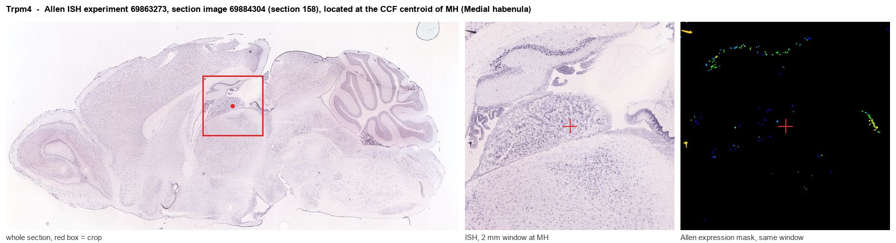
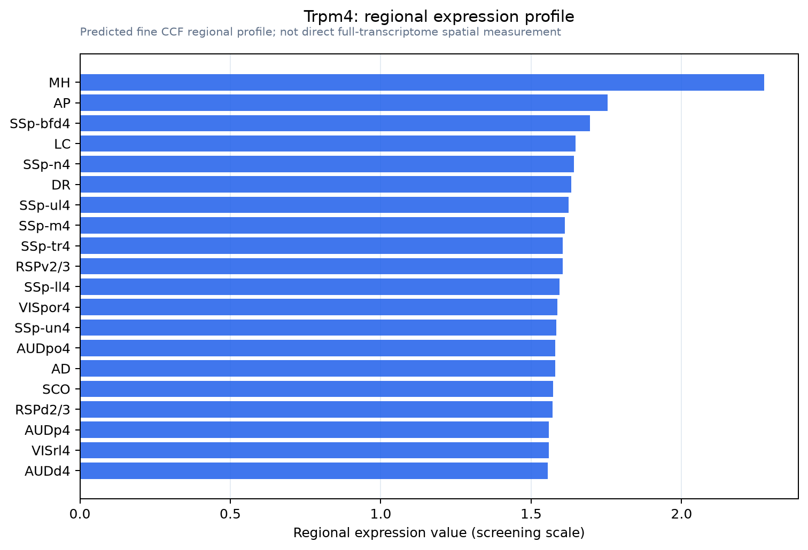

Trpm4
Transient receptor potential cation channel subfamily M member 4 (Calcium-activated non-selective cation channel 1) (Long transient receptor potential channel 4) (LTrpC-4) (LTrpC4)
Spatial tier: REGION_BIASED · Class: ION_CHANNEL · Top region: MH (Medial habenula) · Positive regions: 47/554
Function in MH: evidence, prediction, innovation
- Gene function
- Trpm4 encodes a Ca2+-activated but Ca2+-impermeable non-selective cation channel of the TRP melastatin family. Rising intracellular Ca2+ opens it to monovalent cations, producing a depolarising Na+ current that paradoxically limits further Ca2+ entry by collapsing the electrical driving force. In excitable cells it supports plateau potentials, bursting and slow afterdepolarisations, and it partners SUR1 in injured CNS tissue.
- Region function
- The medial habenula is an epithalamic nucleus whose cholinergic (ChAT/Slc17a6) and substance P (Tac1) neurons project almost exclusively through the fasciculus retroflexus to the interpeduncular nucleus. This pathway controls nicotine aversion and withdrawal, anxiety, fear and aversive-memory expression.
- Published in this region
- inferred No region-specific literature found. The closest relevant finding is Kawai et al. 2025 (Sci Adv), who showed that in MHb neurons nicotinic Ca2+ influx activates a Ca2+-gated chloride conductance which, together with high-threshold Cav channels, holds the membrane near -30 mV to produce a long-lasting refractory period - exactly the class of Ca2+-gated depolarising current TRPM4 mediates elsewhere; Allen ISH detects only trace Trpm4 in MH (energy 0.53 versus 0.38 grey matter).
- Predicted function
- Prediction: TRPM4 would act in MHb as a Ca2+-activated depolarising conductance downstream of alpha3beta4 nAChRs and high-threshold Ca2+ channels, sustaining the plateau depolarisation underlying the nicotine-evoked long-lasting refractory period and any bursting in these tonically firing neurons. Blocking it with 9-phenanthrol or deleting Trpm4 in MHb should shorten the plateau, restore fast firing after nicotine and so exaggerate nicotine-evoked MHb-IPN output and nicotine aversion. The low mRNA level means an equally plausible outcome is that the relevant conductance is an anoctamin rather than TRPM4.
- Innovation
- ★★★★★ 5/5 There is no habenula TRPM4 literature at all, yet MHb was just shown to depend on Ca2+-activated depolarising conductances, making this an obvious untested candidate.
- Tools
- Trpm4 global knockout mice; selective blocker 9-phenanthrol and the improved analogue CBA; glibenclamide for SUR1-TRPM4 complexes; TRPM4 antibodies; no Trpm4-Cre line is reported, so cell-type work needs conditional alleles plus ChAT-IRES-Cre (JAX 006410) or Tac1-IRES2-Cre (JAX 021877).
- References
Direct evidence located at the region

Allen ISH experiment 69863273, section image 69884304 (section 158): the section that contains the CCF centroid of Medial habenula according to the Allen image-to-atlas alignment (reference_to_image), with a 2 mm window around that point. Left: whole section, red box = window. Middle: ISH signal. Right: Allen's expression-mask view of the same window. open this image in the Allen viewer
Direct spatial evidence

Regional expression figure

Predicted WMB × fine-CCF profile; not direct full-transcriptome spatial measurement.
Spatial profile
Evidence and specificity
- Evidence status
- PREDICTED_FINE
- Direct sources
- None; predicted localization only
- Exclusive threshold
- 12 positive regions out of 554
- Spatial specificity
- 0.285
- Top-region fraction
- 0.043
- Filter status
- PASS
Interpretation limits
- Cell-type-to-region projection is imputed expression, not direct spatial measurement.
- Adult reference atlases do not establish stability across age, sex, strain, state, or disease.
- Transcript abundance does not guarantee protein abundance or genetic-tool performance.